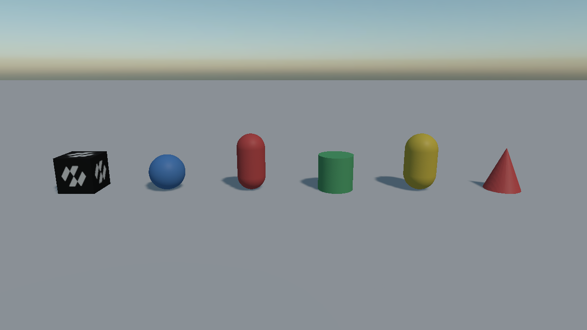
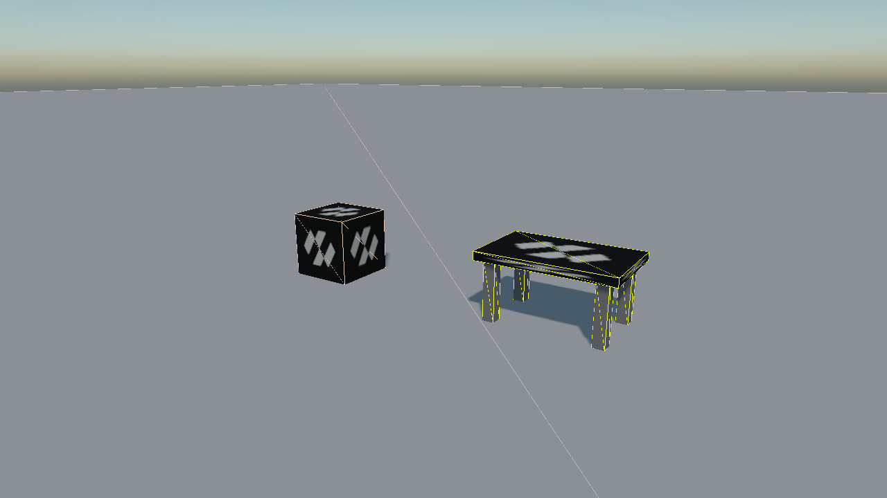
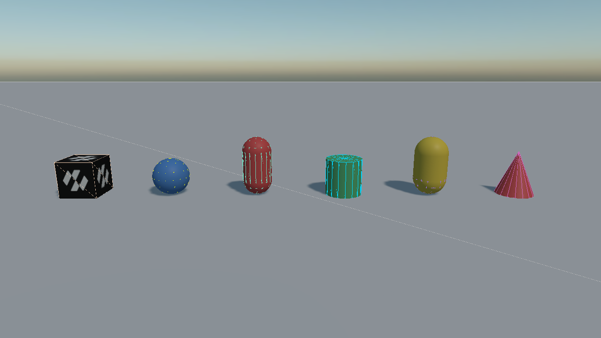

Colliders

A physics body has no shape of its own. Colliders are what give it one: where it is solid, what it can hit, and, through their density, how heavy it is. They work the same on a RigidBody and on a StaticBody, and Collider.Body hands back whichever it found as a PhysicsBody.
A body collects every collider on its own entity and on its descendants when it is created, and builds one shape from them. The walk stops at any descendant that carries a body of its own, since that entity is a separate body.

Two bodies, drawn with PhysicsDebugFlags.Colliders on. Left: the ordinary case, one RigidBody
and one BoxCollider on the same entity, and the body's shape is that collider. Right: a table
whose RigidBody is on the root and whose five BoxCollider components are on its children. The
children carry no body of their own, and there is no compound collider component to add: the
hierarchy is the compound.
Which is what "one body" means in practice: shoved over, the table tips as a single object rather than coming apart into a top and four legs.

Every collider shape in the gallery scene with its wireframe drawn over it. This is the flag worth leaving on while a scene is being built: it says whether each shape is the size, and in the place, that you think it is.
Base Properties
Every collider has these, whatever its shape:
| Property | Default | Description |
|---|---|---|
| Offset | 0,0,0 | Moves the shape relative to the entity, in local space. The drawn mesh does not move with it. |
| RotationOffset | 0,0,0 | Rotates the shape relative to the entity. Shown in degrees in the inspector and held in radians in code. |
| Density | 1000 | Density in kg/m³, used to work out the body's mass when its Mass is left at 0. Water is 1000; oak is about 700; steel is about 7850. |
Offset in action. The mesh stays where the entity is and only the shape moves, which is what the gap between the two shows.
Local Units or Model Bounds
The six primitive colliders (box, sphere, capsule, cylinder and the two tapered shapes) share one more property:
| Property | Default | Description |
|---|---|---|
| UseModelBounds | false | Off, the dimensions are local units: a box of size 1 is one unit wide before the entity's scale is applied. On, they are factors of the model's bounds: a box of size 1 is exactly as big as the model on the entity, and a size of 0.5 is half of it. |
Local units are the default and the simpler rule. Model bounds are the convention the previous Bullet API used, and they are still the handier one for a collider that has to fit a loaded model whose size you do not know in advance. The bounds come from the BaseModel on the same entity (a MeshComponent, a CubeMesh, anything that reports a bounding box), and the collider follows them when the model changes.
How the three axes of the bounds turn into a shape depends on the shape:
| Collider | With UseModelBounds on |
|---|---|
| Box | Size is multiplied by the bounds size, axis by axis. |
| Sphere | Radius is multiplied by the largest of the three axes. |
| Capsule, Cylinder, Tapered Capsule, Tapered Cylinder | The radii are multiplied by the larger of X and Z; Height is multiplied by Y. |
With the property on, the collider also centres itself on the model's bounds, so a model whose origin is at its feet still gets a collider around its middle. Offset is then measured from that centre.
Switching the property on an existing collider does not change the shape. When a model is available the stored dimensions and offset are converted on the spot: a 20-unit box on a 20-unit model becomes a box of size 1 relative to the bounds, and back again. Only when there is no model yet, during deserialization for instance, is the value stored as it is, which is what lets a scene migrated from Bullet keep its relative sizes until its models load.
Note
A planar model, a quad or a sheet of UI, has a bounding box that is almost zero along one axis. That axis is kept as it is rather than padded out to a unit: only the native shape is clamped to the smallest size Jolt accepts, 0.0001. A flat manipulator therefore gets a flat collider and not a cube.
Choosing a Collider
| Collider | Convex | Bodies | Notes |
|---|---|---|---|
| Box | yes | any | The cheapest shape there is. Reach for it first. |
| Sphere | yes | any | Cheaper still to test, and rolls. |
| Capsule | yes | any | The standard shape for anything that stands up. Never catches on a seam. |
| Cylinder | yes | any | Wheels, barrels, columns. |
| Tapered Capsule | yes | any | A capsule with a different radius at each end. |
| Tapered Cylinder | yes | any | A truncated cone, and a plain cone when its top radius is 0. |
| Mesh (convex hull) | yes | any | The convex wrapping of a model. Anything hollow or concave is filled in. |
| Mesh (triangle mesh) | no | not dynamic | Every triangle of a model, concavities and all. A StaticBody or a kinematic RigidBody only. |
| Plane | no | not dynamic | An infinite ground plane, and the cheapest ground there is. |
| Height Field | no | not dynamic | A grid of heights: terrain, deformable at run time. |
"Not dynamic" means a StaticBody or a RigidBody with IsKinematic set. A dynamic body given one of these traces a warning and ignores it.
Every convex collider dropped side by side: box, sphere, capsule, cylinder, tapered capsule, and a cone (a tapered cylinder with its top radius at zero).
Tip
A pile of primitives beats a mesh collider nearly every time. A convex hull is more expensive to test than a box, a triangle mesh cannot go on a moving body at all, and three boxes describe most props well enough that no one will notice the difference.
Compound Shapes from Code
// A table: one top and four legs, all on one body. The child entities carry the colliders; only the
// root carries the RigidBody, so the five shapes end up as one compound body.
Entity table = new Entity("table")
.AddComponent(new Transform3D())
.AddComponent(new RigidBody())
.AddComponent(new BoxCollider() { Size = new Vector3(2f, 0.1f, 1.2f), Offset = new Vector3(0f, 0.7f, 0f) });
foreach (Vector3 corner in legs)
{
table.AddChild(new Entity()
.AddComponent(new Transform3D() { LocalPosition = corner })
.AddComponent(new BoxCollider() { Size = new Vector3(0.1f, 0.7f, 0.1f) }));
}
this.Managers.EntityManager.Add(table);
The compound keeps itself up to date. A collider added to or removed from the hierarchy registers itself with the body, a property changed on one rebuilds the shape, and a child entity that is moved, turned or scaled at run time updates its sub-shape in place, so the legs of the table can be animated and the body follows. The one thing to keep in mind is that the walk stops at a descendant with a body of its own: a collider under a nested RigidBody or StaticBody belongs to that body, not to the root.
For a change the body cannot see, the shape can be rebuilt by hand:
this.body.InvalidateShape();